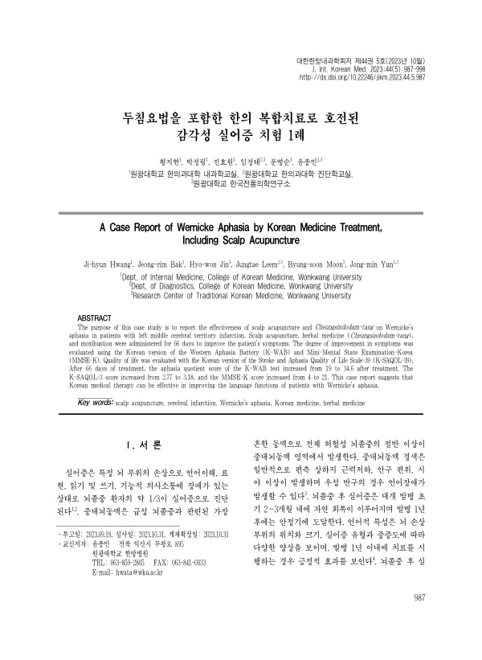

A Case Report of Wernicke Aphasia by Korean Medicine Treatment, Including Scalp Acupuncture
Hwang Jh, Bak Jr, Jin Hw, Leem J, Moon Bs, Yun Jm
The Journal of Internal Korean Medicine 44(5):987-998

첫 장 · 오픈액세스First page · open access
논문 소개Summary
좌측 중대뇌동맥 경색 뒤 감각성 실어증과 우측 편마비가 온 60대 여성에게 두침과 청신도담탕, 뜸을 66일간 시행한 증례입니다. 한국판 웨스턴 실어증 검사의 실어증 지수가 19점에서 34.6점으로, 한국판 뇌졸중·실어증 삶의 질 척도가 2.77점에서 3.18점으로, 한국판 간이정신상태검사가 4점에서 21점으로 올랐습니다. 뇌졸중 환자의 약 3분의 1이 실어증으로 진단되지만 두침을 활용한 한의 치료 증례는 아직 드물고, 삶의 질까지 함께 평가한 사례는 더 드뭅니다.
A woman in her sixties developed Wernicke's aphasia and right hemiplegia after infarction in the left middle cerebral artery territory, and received scalp acupuncture, Cheungsindodam-tang and moxibustion over 66 days. The aphasia quotient of the Korean version of the Western Aphasia Battery rose from 19 to 34.6, the Korean Stroke and Aphasia Quality of Life Scale-39 from 2.77 to 3.18, and the Korean Mini-Mental State Examination from 4 to 21. About a third of stroke patients are diagnosed with aphasia, yet Korean medicine cases using scalp acupuncture remain scarce, and those that also assess quality of life scarcer still.
인용Cite
Hwang Jh, Bak Jr, Jin Hw, Leem J, Moon Bs, Yun Jm. A Case Report of Wernicke Aphasia by Korean Medicine Treatment, Including Scalp Acupuncture. The Journal of Internal Korean Medicine. 2023;44(5):987-998. doi:10.22246/jikm.2023.44.5.987